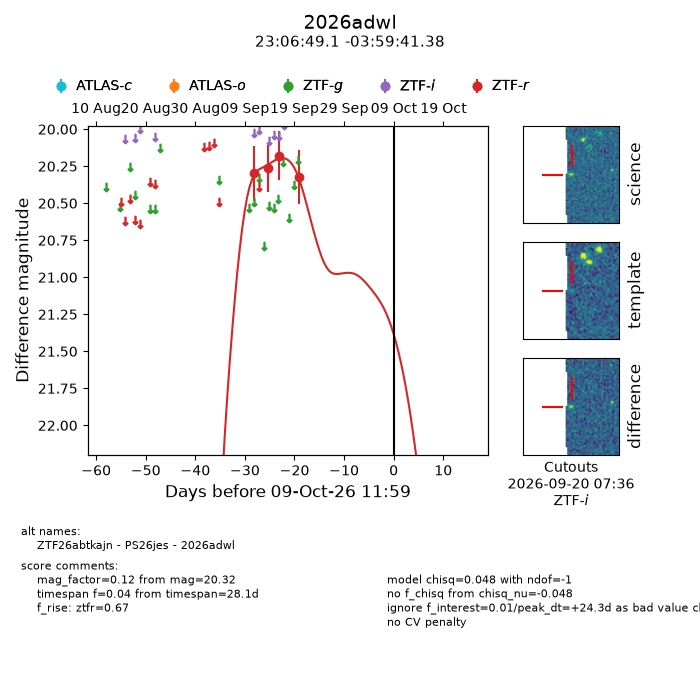
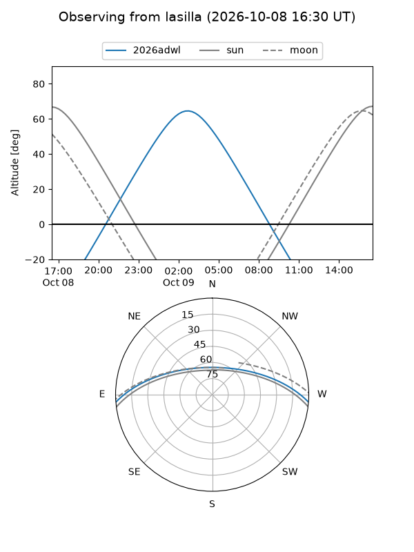
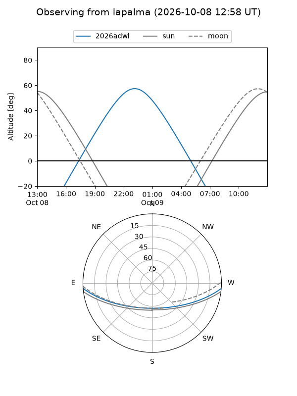
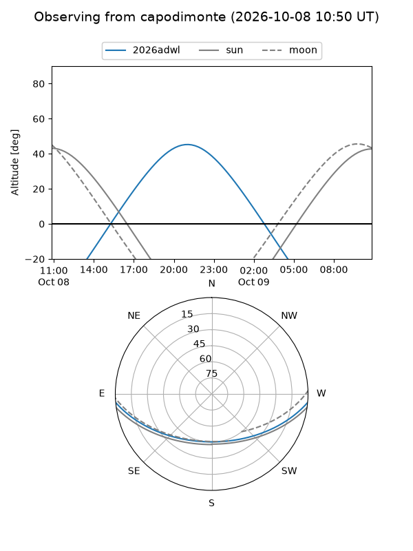
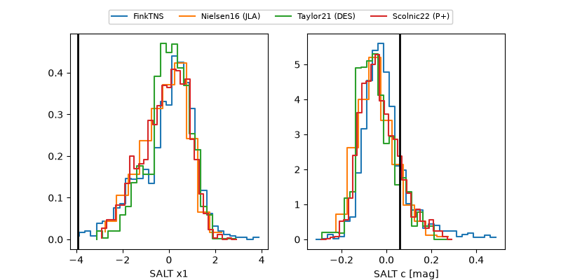

2026adwl
Target 2026adwl at 2026-10-09 12:01
Aliases and brokers:
FINK-ZTF: ztf.fink-portal.org/ZTF26abtkajn
Lasair-ZTF: lasair-ztf.lsst.ac.uk/objects/ZTF26abtkajn
ALeRCE-ZTF: alerce.online/object/ZTF26abtkajn
YSE-PZ: ziggy.ucolick.org/yse/transient_detail/2026adwl
TNS name: wis-tns.org/object/2026adwl
Direct TNS query: direct search
alt names
ZTF26abtkajn (ztf,fink_ztf)
2026adwl (tns,yse)
PS26jes (panstarrs)
Coordinates:
equatorial (ra, dec) = 346.7044,-3.99483
equatorial (HMS+DMS) = 23:06:49.05,-03:59:41.38
galactic (l, b) = (71.1530,-55.96366)
Flags:
peak dt: +24.3
Photometry:
last ztfr=20.32
4 ztfr detections
Lightcurve

Visibility



Additional plots
